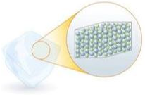
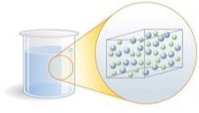
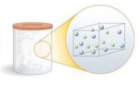
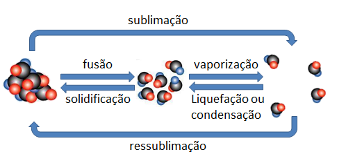
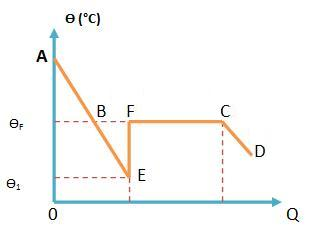
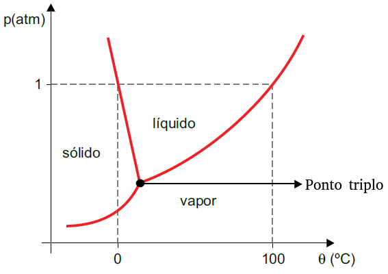

Por ora, estudaremos três estados físicos da matéria:
|
 |
|
 |
|
 |
|
Uma substância, ao receber ou ceder energia, pode alterar a maneira como seus átomos se organizam para compô-la. Quando isso acontece, ela pode passar de uma fase a outra. A imagem ao lado apresenta os nomes que distinguem os processos de mudança de fase |
 |
VAPORIZAÇÃO: Uma substância pode passar de uma fase a outra de diferentes modos. O processo que conduz uma substância do estado líquido ao gasoso é genericamente chamado de vaporização. Ele pode ocorrer de pelo menos três modos distintos, e a cada um deles damos um nome diferente:
◦ EVAPORAÇÃO: Processo em que o líquido se converte em gás espontaneamente, normalmente por influência do calor solar. Nesse processo, a água se converte em gás mesmo à temperatura ambiente.
◦ EBULIÇÃO: Processo não espontâneo, forçado, em que fornecemos ao líquido elevadas quantidades de calor e ele se converte ao longo de um intervalo de tempo considerável (ex.: água fervendo na chaleira).
◦ CALEFAÇÃO: Neste processo, transfere-se muita energia ao líquido e muito rapidamente; por isso, a conversão é praticamente instantânea.
LIQUEFAÇÃO OU CONDENSAÇÃO
◦ LIQUEFAÇÃO: Chamamos de liquefação o processo que conduz um gás do estado gasoso ao estado líquido.
◦ CONDENSAÇÃO: Chamamos de condensação o processo que conduz um vapor do estado gasoso ao estado líquido.
Pelo menos dois fatores influenciam os pontos de fusão e ebulição de uma substância:
➔ PRESSÃO EXTERNA: Os pontos de fusão e ebulição variam conforme a pressão externa à substância analisada: quanto maior for a pressão agindo sobre ela, maior será a quantidade de energia necessária para modificar seu arranjo molecular.
➔ IMPUREZAS: As impurezas podem modificar o arranjo molecular da substância, fazendo com que os pontos de fusão e ebulição variem.
Abaixo há uma tabela que apresenta algumas substâncias sem impurezas e os respectivos pontos de mudança de fase, à pressão de 1 atm.
|
Substância |
Ponto de fusão (°C) |
Ponto de ebulição (°C) |
|---|---|---|
|
Oxigênio |
-218 |
-183 |
|
Metano |
-183 |
-162 |
|
Água |
0 |
100 |
|
Alumínio |
660 |
2519 |
|
Prata |
692 |
2162 |
|
Ouro |
1064 |
2856 |
|
Ferro |
1568 |
2861 |
Sobrefusão é um estado físico metaestável (não estável) da matéria. Em algumas ocasiões, ao resfriarmos um líquido a uma temperatura abaixo do seu ponto de fusão sem submetê-lo a perturbações, o líquido pode permanecer líquido mesmo abaixo da temperatura de fusão.
Para fazer com que esse líquido em sobrefusão se solidifique, basta aplicar sobre ele uma perturbação.

O diagrama de fases é um gráfico que indica a fase de uma substância em função de sua temperatura e pressão. Cada substância possui, obviamente, um diagrama de fases próprio. Abaixo vemos o diagrama de fases da água:

Obs.: O ponto triplo da água ocorre quando a submetemos a uma pressão de 0,0006 atm e a uma temperatura de 0,01 °C. Nessas condições, encontramos a água nos três estados físicos da matéria: sólida, líquida e gasosa.